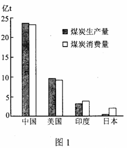
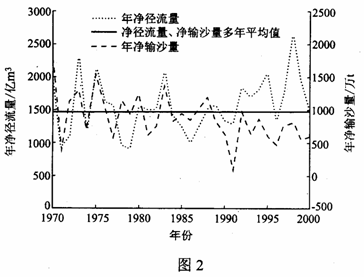
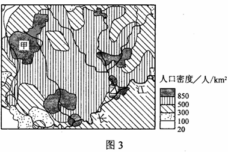
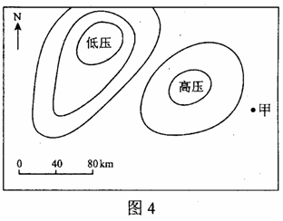
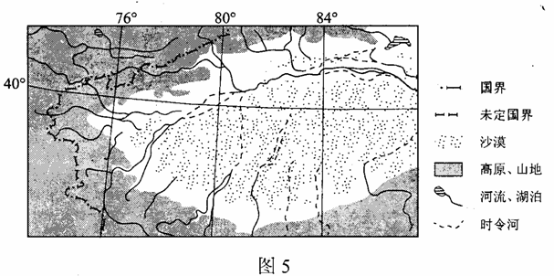

None - Fade - Slide - Convex - Concave - Zoom
选择班级
幻灯片样式
Black (default) -
White -
League -
Sky -
Beige -
Simple
Serif -
Blood -
Night -
Moon -
Solarized
图1示意2008年中国、美国、印度、日本四个国家的煤炭生产量和消费量。读图1并根据所学知识，完成1-2题。
1.图示四个国家中，人均煤炭消费量最高的是
A.中国
B.美国
C.印度
D.日本
2.借助图示资料可以大致推算出相应国家的
A.单位GDP能耗
B.碳排放量
C.能源进出口量
D.煤炭自给率
某大河的一条支流与干流之间存在“吞吐”关系，图2示意该支流出口处1970~2000年间年净径流量（输出径流量与输入径流之差） 和年净输沙量（输出泥沙量和输入泥沙量之差）。根据图文资料和所学知识，完成3~5题。
3. 下列各时间段中，年净径流量与年净输沙量变化趋势最接近的是
A．1970年~1976年
B． 1977年~1984年
C．1980年~1989年
D．1989年 ~ 2000年
4．该支流流入
A．黄河
B．长江
C．辽河
D．黑龙江
5．1983年以来 ，年净输沙量总体呈下降趋势，最可能的原因是该支流流域
A．建设用沙量增加
B．兴建水库的森林覆盖率提高
C．矿产资源开发力度加大
D．连续干旱
6月上旬某地约5时 （地方时）日出 ， 据此完成6～7 题
6．该地可能位于
A．亚马孙河河口附近
B．地中海沿岸
C．北冰洋沿岸
D．澳大利亚
7．6月份该地看到的日出和日落方向分别为
A．正东、正西
B．东南、西南
C．东北、西北
D．东南、西北
图3示意某地区人口密度。读图3，完成8～9题
8.该地区人口密度差异的主要影响因素有 ①纬度 ②河流 ③降水 ④地形
A．①②
B.①④
C. ②③
D.②④
9.甲．乙两地都行成了特大城市，与甲地相比，乙地形成城市的区位优势是
A.地形平坦
B.水源充足
C.陆路交通方便
D.水陆交通枢纽
图4示意长江中下游地区夏初某时的气压系统。该气压系统以每天120千米的速度自西向东移动。据此完成10～11题。
10.24小时后甲地主要吹
A .东北风
B .东南风
C .西北风
D .西南风
11.30～48小时之间，甲地可能经历
A.持续晴朗高温天气
B.连绵阴雨天气
C.强对流降雨天气
D.沙尘暴天气
36．（36分）阅读图文资料并结合所学知识，完成下列各题。
20世纪50年代以来，图5中我国境内某些区域建立了许多国营农场，引种优质长绒棉，目前，这些区域的棉区是我国最大的商品棉生产基地，种植规模大，机械化水平高，近年来，每至棉花收获季节，数十万外地民工前来这里采摘棉花。
（1）推断并说明这些国营农场的分布规律，分析这些地区种植优质长绒棉的有利条件。（12分）
(1)分布规律：盆地周围绿洲地带(山前洪积—冲积扇地带)。(3分) 有利条件：(棉花生长期)光照充足，热量充足，有灌溉条件。(9分)
（2）距消费市场较远却并未影响该区域商品棉销售，请解释原因。（6分）
(2)棉花易储存、易运输(交通条件改善)；棉花品质优良(我国最大的长绒棉生产基地)，市场需求量大。(6分)
（3）说明该区域商品棉生产的现实性因素。（6分）
(3)劳动力不足，在棉花采摘期尤为突出；气候干旱(降水稀少)，水资源有限。(6分)。
（4）分析该区域过度扩大棉花种植面积对区域环境的影响。（12分）
(4)过度扩大棉花种植面积，会过度消耗水资源，导致河流下游水量大减甚至断流；(4分)荒漠化扩展、绿洲消失(生态环境恶化)；(4分)灌溉用水过量(与排水失衡)，会引起地下水位上升，(造成盐分在土壤表层积累)引发土壤的次生盐碱(渍)化。(4分)(其他合理答案酌情评分)